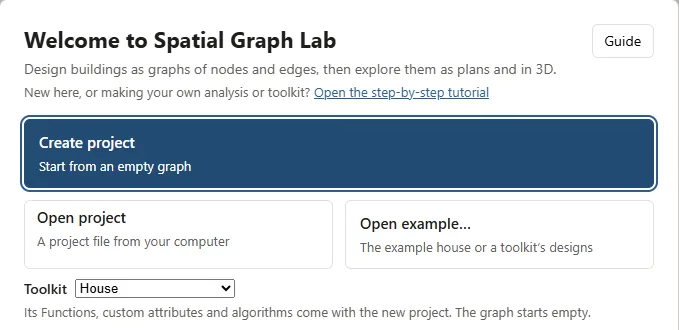
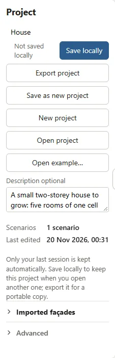

Page 3 of 16 · In the browser
Use the app in your browser
Open spatial-graph-lab.vercel.app on a laptop. Nothing to install.
01Start a project
Choose how to start, then find your way around.
Start a project
Choose how to start, then find your way around.
- Choose how to startThe Welcome screen offers Create project (an empty graph), Open project (a project file from your computer) and Open example… (the House example's designs). The Toolkit picker chooses the Functions a new project starts with.
- Learn the panelsThe Guide button explains every view and panel; its How to… tab has step-by-step entries with pictures.

02Design, analyse and transform
Change the graph, see the building.
Design, analyse and transform
Change the graph, see the building.
- DesignAdd nodes, connect them with Access or Open edges, give them Functions and attributes, and watch the building update in every view.
- Analyse and transformAnalyse reads your design and shows an answer. Transform proposes a change: you see a preview, press Apply, and one Undo reverses it.
Your own: analysis · transform (Exercise 1).
03Keep your work
Save in this browser, and export a file you can keep.
Keep your work
Save in this browser, and export a file you can keep.
Export after every session. Your projects live only in this browser on this computer. Another computer, another browser, a private window or clearing your browsing data will not have them. Project › Export project gives you a file that does.
- Save in this browserProject (left rail) › Save locally. The Welcome screen lists your recent projects.
- Export a fileProject › Export project downloads one
.project.jsonfile with every scenario and every analysis and transform you uploaded. - Open it againOn any computer: Welcome › Open project › choose the file. It opens as a separate copy.

Where does the file go?
Into your Downloads folder (File Explorer › DownloadsFinder › Downloads). Move it somewhere safe, such as Documents or a cloud folder: not into the course repository.
Lost a project? Help › My project is gone.
04Toolkits in the app
The online app has the course's toolkits; yours runs on your computer.
Toolkits in the app
The online app has the course's toolkits; yours runs on your computer.
The online app has the course's toolkits, such as the House example. Your own toolkit (Exercise 2) runs on your computer: About the repository.
No laptop that can run the app?
Tell your tutor early. Only if your tutor agrees, you may hand in browser work instead: Export project and send the .project.json file as your tutor asks.